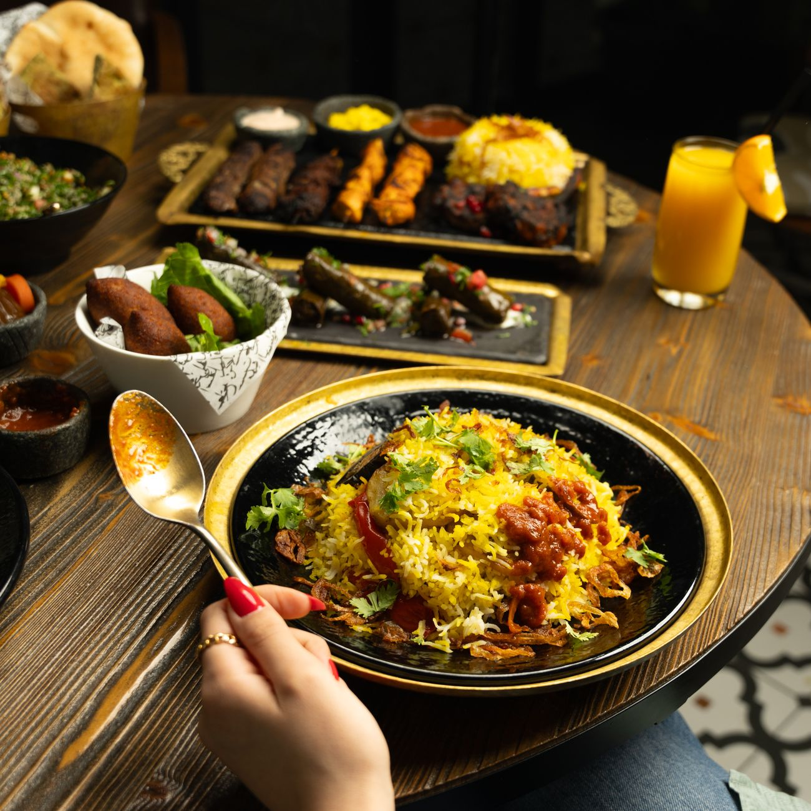

The menus
Two kitchens, one dining room — Persian and Italian, cooked side by side. Everything below comes out of the same pass, so order across both and let the table sort itself out.
How to read this menu
There is no starter-then-main rule here: order two or three plates per person from either kitchen and we’ll send them out as they’re ready, in an order that makes sense. Rice, bread and the big grills are built for sharing, so one between two is usually plenty.
- Plates per person
- Two to three, hungry table or not
- Service
- As dishes are ready, not in courses
- Set menu for groups
- £38 a head, six or more, both kitchens
- Menu changes
- Small edits weekly, bigger ones with the seasons
From the Persian kitchen

Nima cooks the way his mother does in Shiraz: herbs by the armful, slow pots that start before lunch, and a charcoal grill that gets lit at four and doesn’t go out until close. The tahdig is fought over nightly. We cut it at the table so everyone sees who got what.
Starters and small plates
-
Kashk-e bademjan — £8.50
Aubergines cooked down until they collapse, whey, fried mint, walnuts, crisp onion. Warm barbari bread to push it around with.
-
Mast-o khiar — £6.50
Thick strained yoghurt, cucumber, dried rose and mint, a scatter of raisins. The cold thing the grill needs next to it.
-
Sabzi khordan — £7.00
A plate of raw herbs, radishes, walnuts, feta and bread. Not a garnish. Eat it between bites all evening.
-
Ash-e reshteh — £9.00
Green herb and noodle soup with chickpeas and beans, finished with kashk and burnt mint. A bowl, not a cup.
-
Mirza ghasemi — £8.00
Smoked aubergine, garlic, tomato and egg from the north of Iran. Smoky enough that people ask what’s in it.
-
Olivieh — £7.50
Chicken, potato and pickle salad bound with our own mayonnaise. Old-fashioned, and we make no apology for it.
From the charcoal grill
All skewers come with saffron rice or bread, grilled tomato, sumac and raw onion. Add a wedge of tahdig to any of them for £4.00.
-
Kabab koobideh — £16.50
Two skewers of minced lamb and beef with grated onion, worked by hand until it clings to the skewer. The house benchmark.
-
Joojeh kabab — £17.00
Chicken thigh in saffron, lemon and onion overnight, grilled hard so the edges char and the middle stays loose.
-
Barg — £21.00
Lamb fillet flattened thin, marinated in onion juice and saffron. Cooked pink unless you tell us otherwise.
-
Grilled bream — £19.50
Whole fish stuffed with herbs and barberries, turned once over the coals, lemon at the table.
-
Vegetable skewers — £14.00
Aubergine, peppers, onion and halloumi over charcoal, saffron butter, pomegranate molasses.
Stews and rice
-
Ghormeh sabzi — £17.50
Lamb with four herbs, dried lime and kidney beans, cooked five hours until it goes dark. Served with chelo rice.
-
Fesenjan — £18.50
Chicken in ground walnuts and pomegranate molasses, sweet and sour and almost black. Rich — share it.
-
Bademjan stew — £16.00
Fried aubergine, tomato, turmeric and sour grapes. Made without meat, and not as a concession.
-
Baghali polo — £13.50
Rice with broad beans and dill, lamb shank braised until it leaves the bone on its own.
-
Chelo with tahdig — £9.00
Saffron rice and a proper slab of the crust from the bottom of the pot. One per table, usually two.
-
Zereshk polo — £10.00
Rice with barberries, saffron and pistachio. Sharp little berries that cut through everything else on the table.
From the Italian kitchen
Nonna’s side is Emilian by training and stubborn by temperament. Pasta is rolled every morning on the bench you can see from table nine, the ragù goes on at eight and comes off at four, and nothing is finished with cream unless it should be.
Antipasti
-
Gnocco fritto and salumi — £11.00
Puffed fried dough, hot from the pan, with prosciutto and salame felino draped over it until it goes soft.
-
Vitello tonnato — £10.50
Cold roast veal, tuna and caper sauce, salted lemon. Strange on paper, correct on the plate.
-
Burrata and winter leaves — £10.00
Whole burrata, bitter chicory, toasted hazelnuts, good oil and nothing else.
-
Fritto of artichoke — £9.00
Artichokes crushed and fried until the outer leaves shatter, lemon and salt.
-
Sarde in saor — £9.50
Sardines under sweet-sour onions, pine nuts and raisins, made three days ahead as it should be.
-
Focaccia and olive oil — £5.00
Baked twice a service. Ask for it early or it’s gone.
Pasta, rolled that morning
-
Tagliatelle al ragù — £15.50
Eight hours of beef, pork, soffritto and milk. Cut wide, tossed in the pan, parmesan at the table.
-
Tortelli di zucca — £15.00
Squash, amaretti and mostarda in thin pasta, butter and sage. Sweet, savoury, entirely Mantuan.
-
Cacio e pepe — £13.50
Tonnarelli, pecorino, an unreasonable amount of pepper. No cream, no butter, no shortcuts.
-
Pappardelle with duck — £16.50
Duck legs braised in red wine and orange peel, pulled and returned to the sauce.
-
Garganelli, peas and guanciale — £15.00
Ridged quills rolled on a comb, spring peas, cured pig cheek, mint.
-
Lasagne verde — £15.50
Spinach sheets, ragù, béchamel, six layers. Cut square, edges crisp, centre soft.
Larger plates
-
Pork loin in milk — £19.00
Cooked slowly in milk, garlic and lemon until the sauce curdles into something better than sauce.
-
Coda alla vaccinara — £20.00
Oxtail with celery, tomato and a little bitter chocolate. Bread not optional.
-
Grilled turbot — £24.00
On the bone over the same coals as the kababs, dressed with oil, parsley and lemon.
-
Roast chicory and beans — £14.00
Bitter leaves roasted dark, cannellini beans cooked in their own broth, chilli and rosemary oil.
The crossings
Most nights the two kitchens stay on their own side of the pass. These four dishes are the exceptions — each one exists because somebody had an ingredient going spare and the other cook had a better idea for it. We don’t force any more than this.
-
Saffron and barberry risotto — £16.00
Milanese risotto made with Nima’s saffron water instead of stock alone, barberries stirred through at the end. It started as an argument about which kitchen owns saffron. Nobody won.
-
Tahdig lasagne — £17.00
Ragù and béchamel layered into a rice crust rather than pasta sheets, baked in the tahdig pot. Born of a Sunday when we ran out of pasta sheets at seven o’clock and had rice to spare.
-
Grilled lamb with salsa verde — £22.00
Lamb from the charcoal grill, cut off the skewer, under Nonna’s parsley, caper and anchovy sauce. The two kitchens agree on lamb, herbs and acid, so this one was easy.
-
Pomegranate and walnut agrodolce — £9.50
Roast squash in a sweet-sour dressing built from fesenjan: pomegranate molasses standing in for vinegar, walnuts for pine nuts. The most convincing evidence that the pairing isn’t a gimmick.
We didn’t set out to fuse anything. We set out to share a gas line and a walk-in. Four dishes wandered across on their own.
Nima Rastegar, co-owner
Sweets and drinks
Sweets
-
Saffron and rosewater ice cream — £6.50
Bastani, churned here, with pistachio and shards of frozen cream through it.
-
Torta di riso — £7.00
Baked rice pudding cake with lemon zest and a little rum. Served at room temperature, as intended.
-
Faloodeh — £6.00
Frozen rice noodles in rosewater syrup, lime squeezed over. The lightest thing on the menu.
-
Affogato with date syrup — £6.00
Espresso over vanilla ice cream, a spoon of date syrup instead of sugar.
Tea
Persian black tea is brewed in a samovar all evening and comes in a glass with rock sugar — £3.50, and we’ll top it up. Also: cardamom tea £4.00, dried lime and mint £4.00, sour cherry iced tea £4.50.
Amaro and after-dinner
A short list, all sold by the 50ml measure: Nonino £7.50, Sfumato £7.00, Braulio £7.00, Cynar £6.00, Fernet-Branca £6.50, Vin Santo £8.00. Wine by the glass starts at £6.50, and there’s a full list, plus zero-alcohol sharbat and house lemonade at £4.00, printed at the table.
Allergens and dietary options
Tell your server what you can’t eat and we’ll work around it — that conversation is more reliable than any symbol printed on a menu. Both kitchens keep written allergen information for every dish, including the fourteen declared allergens, and it’s at the pass whenever you want to see it.
- Vegetarian
- Roughly a third of the menu, before adaptations
- Vegan
- Most Persian stews and several pastas can be made without dairy
- Gluten
- Rice dishes and grills are naturally free of it; pasta is not
- Nuts
- Walnut and pistachio are used heavily — always mention an allergy
We handle wheat flour, nuts, sesame and dairy in an open kitchen, so we can reduce risk but we can’t promise a dish is entirely free of traces. If that matters for you, call us before you book on 020 7946 0813 and we’ll talk it through honestly.
Come and eat both
Tables go quickly from Thursday to Saturday, and we hold a few back at the counter for walk-ins every night.